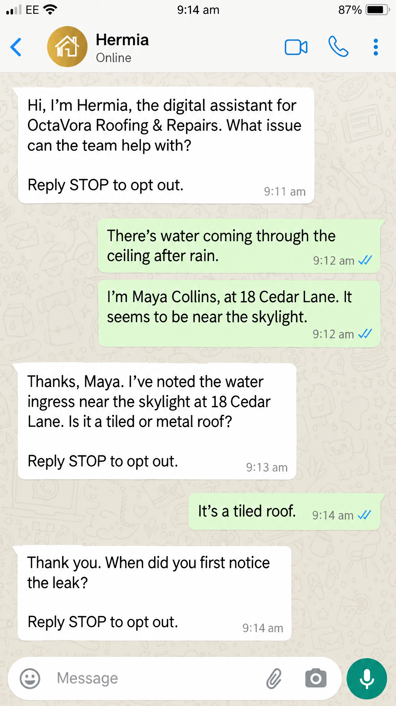
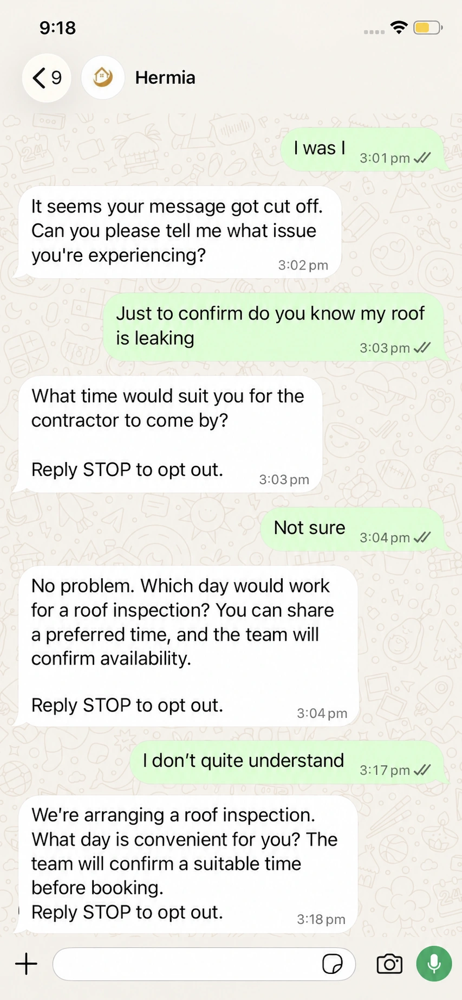
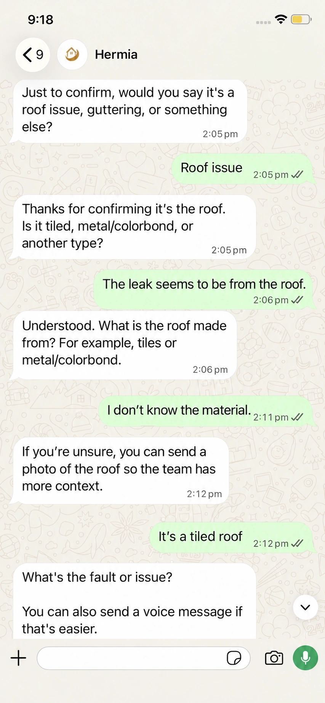
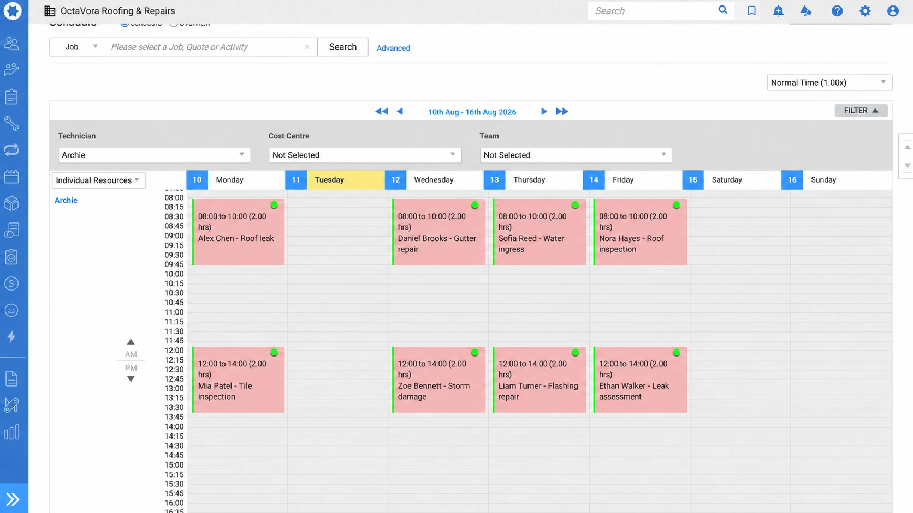
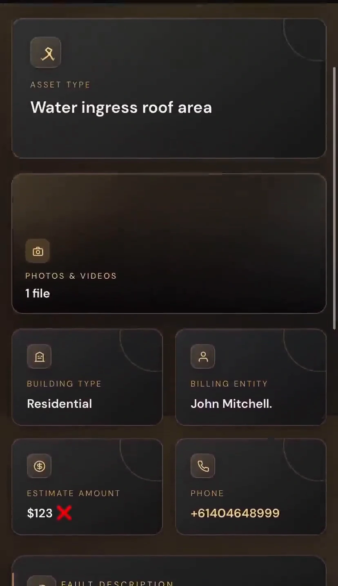

See the conversation.
See the Simpro handoff.
From a question on WhatsApp to a record your office can review. Explore supplied examples of the conversation, prepared lead and scheduling context.

Two messages.
One enquiry.
Customers do not always put every detail into one message. This illustration shows an issue in the first reply, then a name and location in the next, followed by one acknowledgement that uses the combined context.
- Keep the issue and the later identifying details together.
- Use the context from both replies in the next question.
- Test message-order handling in the actual configured workflow.

An unfinished message.
A clear next question.
A cut-off message is not a complete enquiry. This edited example illustrates the intended follow-up: ask for the missing issue, keep the reported roof leak in context and collect a preferred time without treating it as a confirmed appointment.
- Invite the customer to complete an unfinished message.
- Keep the reported issue in the follow-up question.
- Request a preferred time; let the authorised team confirm availability.

Same subject.
A different next question.
When a reply still leaves the roof material unclear, make the next question more helpful—not a copy of the previous one. This edited example varies the wording, asks for the missing detail and offers a photo as another way to provide context.
- Use different wording when the same question is not helping.
- Ask for the specific detail the enquiry still needs.
- Offer a photo or voice message as an alternative to typing.
A brief your office can work with.
The useful detail should not stay buried in a chat. An approved Simpro handoff can carry the reported issue and relevant notes into the record your team uses, ready for a person to review instead of retyping the whole conversation.
- Keep the customer’s account of the problem attached to the lead.
- Give descriptions and notes a clear purpose.
- Let your team assess the work and decide the next step.

Eight examples.
One consistent view.
A clean schedule makes the available context easier to review. These eight named examples use the same roomy pink-and-green card layout, with the time first and the customer’s name and job detail underneath.
- Eight fully named sample entries—not generic placeholder labels.
- Consistent card height, text order and readable job details.
- Treat requested availability as provisional until the approved workflow confirms it.

The same context. In the right hands.
Your team should not have to piece together a message, an image and an email to understand one enquiry. A prepared docket brings the available detail together and routes it to the recipients your business chooses.
- A concise reported-issue summary.
- Supporting evidence kept with the same enquiry.
- Approved recipients, with access and delivery defined by your business.
More detail.
At your own pace.
Open a full image or play a recording. Explore the part of the enquiry that matters to your team.
14 examples
Two replies, one enquiry
Explore the combined context in this double-message illustration.
Illustrative intended behaviour, not a recorded live test or zero-error guarantee.When the message is cut off
Explore the illustrative context-preserving follow-up.
Edited illustrative conversation, not a live-workflow fix.A more useful roof question
Explore the varied follow-up wording.
Edited illustrative customer and assistant wording.Eight named schedule entries
View the consistent Zoe-style sample cards.
Edited illustrative calendar with eight named entries, not real bookings.Customer context in Simpro
Explore the edited customer-record preview.
Edited Simpro customer preview with a fictional example.com email.The right site, with the enquiry
Explore the supplied site-record layout.
Edited illustrative Simpro site preview.A clear introduction
Watch the supplied roofing-pathway introduction.
Supplied conversation recording, shown only in the Simpro pathway.From a vague reply to useful detail
Watch the supplied clarification sequence.
Supplied conversation recording, shown only in the Simpro pathway.Explore the prepared brief
See the reported issue and evidence together.
Supplied prepared-docket recording, restricted to the Simpro pathway.A next-step question
Read the supplied example estimate and response.
Demonstration estimate only; not Hermia pricing or a final job quote.Capture a preferred time
Read the supplied roofing availability exchange.
Supplied Simpro-pathway conversation; the team confirms the appointment separately.The lead at a glance
Inspect the reported fault and enquiry notes.
Edited Simpro lead preview with a fictional example.com email.A structured record preview
Explore the supplied record layout.
Illustrative supplied record layout, shown only in the Simpro pathway.Keep the supporting media
Explore the supplied evidence view.
Supplied submitted-media recording, restricted to the Simpro pathway.Like the direction?
Configure your own.
Your channels. Your questions. Your recipients. Define the workflow you want Hermia to follow for your business.
Configure Hermia Ask a question ↗